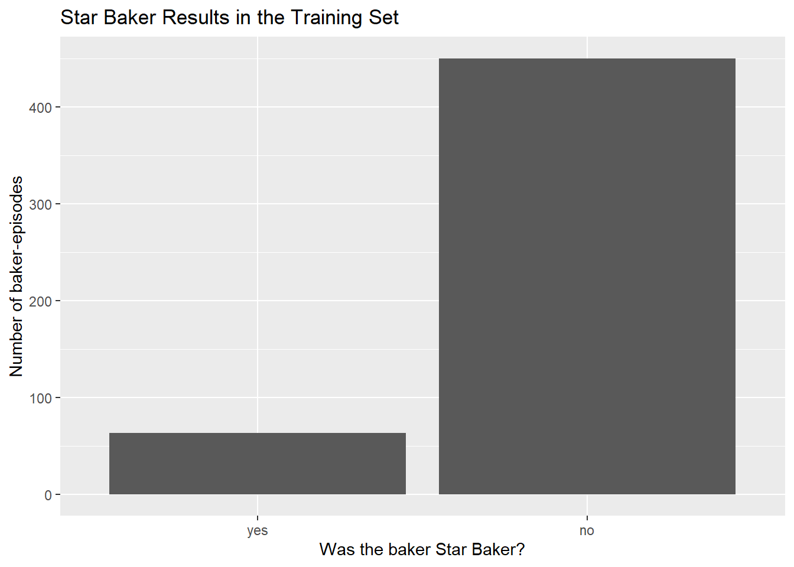
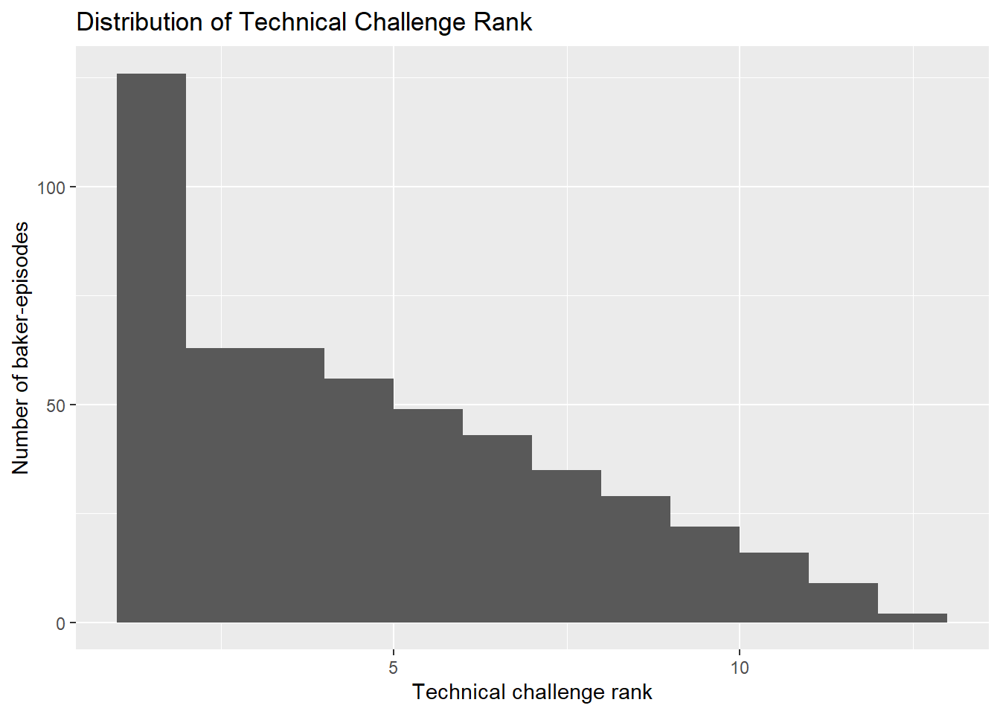
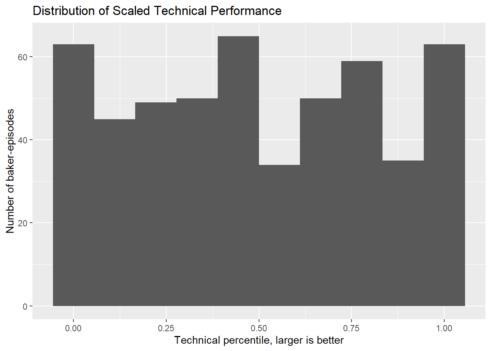
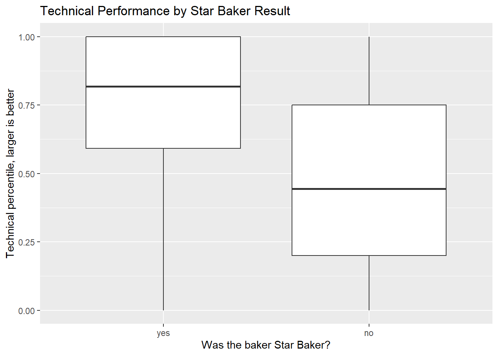
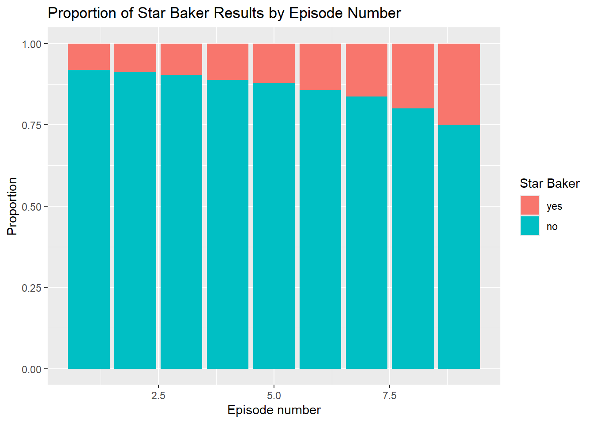
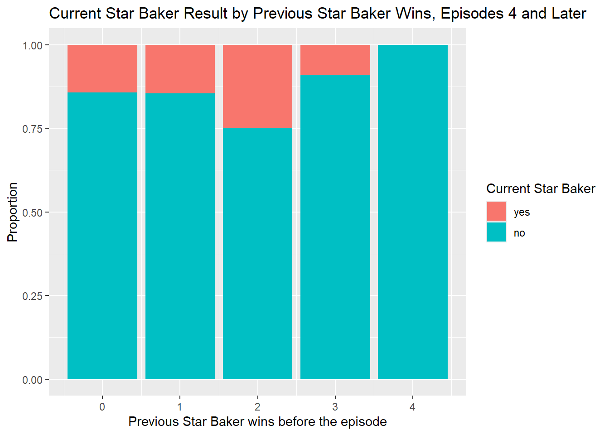
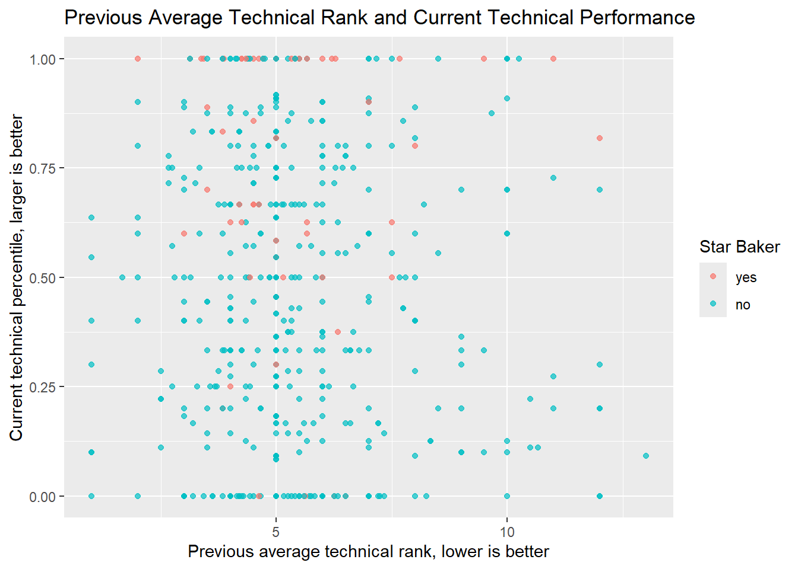
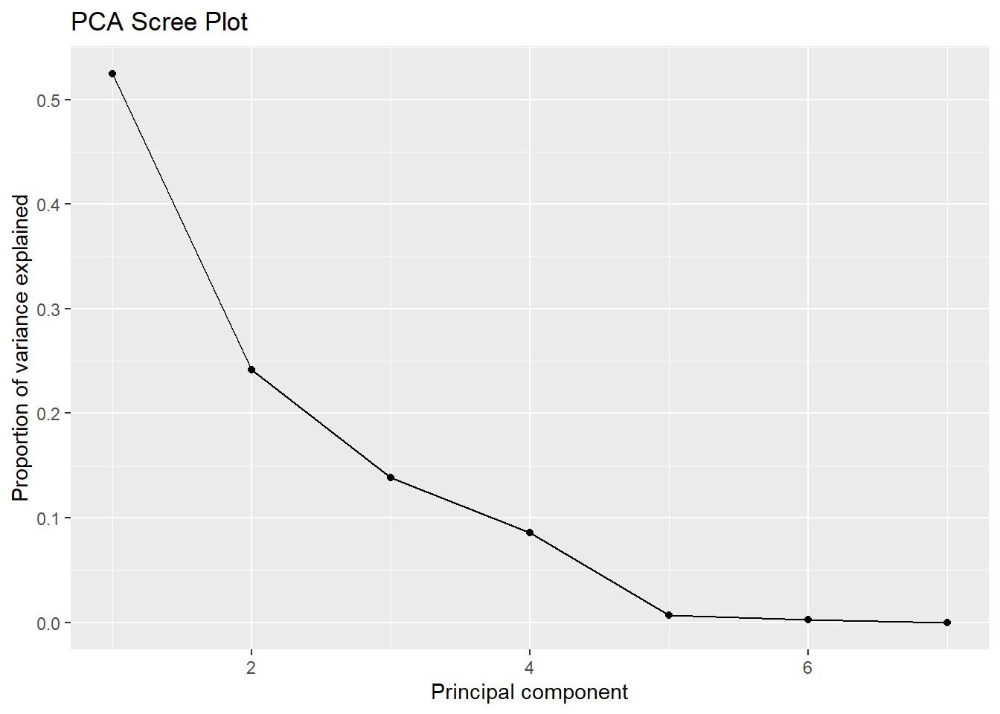
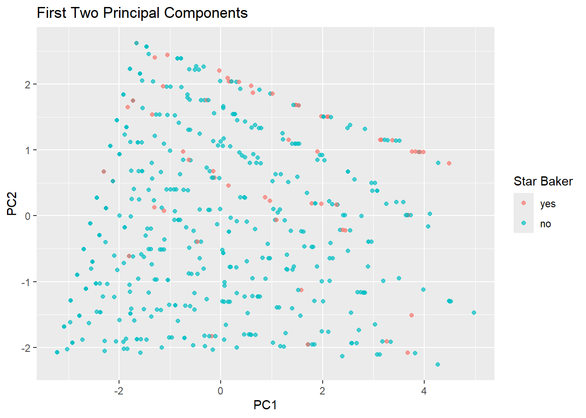
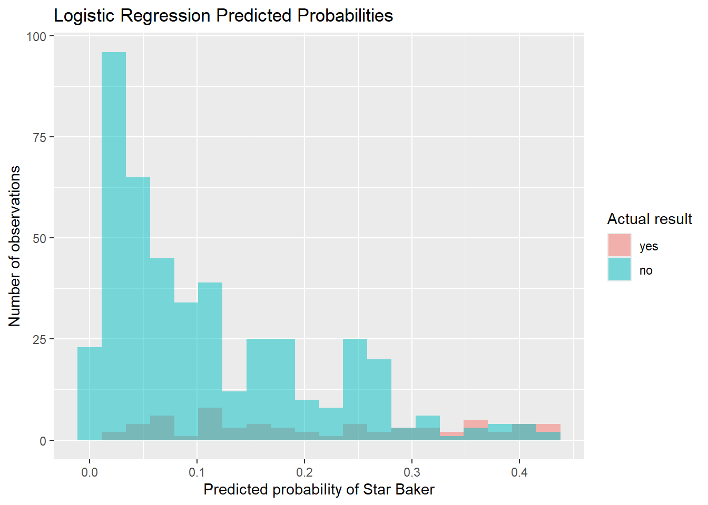

Predicting Star Baker on The Great British Bake Off
Author
Julianne Duong
Summary
The main goal of this project is to investigate whether information about a baker’s technical challenge performance and episode context can help predict whether that baker will be named Star Baker on The Great British Bake Off. The most important pattern I found is that technical performance is related to Star Baker results, but it is not enough to perfectly predict the outcome. This makes sense because Star Baker is based on the whole episode, including the signature and showstopper bakes, not just the technical challenge.
The modeling section also shows why accuracy needs to be interpreted carefully. Most baker-episode observations are not Star Baker winners, so a model can have high accuracy even if it mostly predicts no. For that reason, I compare the models to a baseline model and also use probability-based metrics such as Brier score and mean log loss. Overall, the available variables contain useful information, but they do not capture every part of the judges’ decision.
Motivation and Context
The Great British Bake Off is a baking competition where contestants complete several baking challenges each episode. In most regular episodes, one contestant is named Star Baker based on the judges’ overall impression of that episode’s bakes. I wanted to study this because Star Baker is not decided by one simple measurement. A contestant can do well in the technical challenge but still not win Star Baker if their signature or showstopper bake is weaker.
This makes the problem interesting from a statistical learning point of view. I am trying to predict a real-world decision using only the information available in the data set. The project gives a chance to practice data wrangling, exploratory analysis, classification, and model evaluation while also thinking carefully about what the data does not measure.
Packages Used In This Analysis
#| label: load packageslibrary(bakeoff)
Warning: package 'bakeoff' was built under R version 4.5.3
library(dplyr)
Attaching package: 'dplyr'
The following objects are masked from 'package:stats':
filter, lag
The following objects are masked from 'package:base':
intersect, setdiff, setequal, union
library(ggplot2)library(rsample)library(recipes)
Attaching package: 'recipes'
The following object is masked from 'package:stats':
step
The packages below were used for the analysis. I loaded the individual packages instead of only loading tidymodels so that it is clearer which tools are being used.
Package
Use
bakeoff
to access the Great British Bake Off data
dplyr
to filter, create variables, and summarize the data
ggplot2
to create the graphs
rsample
to split the data and create cross-validation folds
recipes
to set up preprocessing steps for the models
parsnip
to define the logistic regression and KNN models
workflows
to combine models with preprocessing recipes
tune
to tune the number of neighbors for KNN and fit cross-validation resamples
yardstick
to calculate model performance metrics
broom
to get model predictions in a convenient format
Data Description
#| label: import data# using the challenges data set from the bakeoff packagebakeoff_raw <- challenges# checking the size, variable names, & first few rowsdim(bakeoff_raw)
# A tibble: 6 × 7
series episode baker result signature technical showstopper
<int> <int> <chr> <chr> <chr> <int> <chr>
1 1 1 Annetha IN Light Jamaican Black Ca… 2 Red, White…
2 1 1 David IN Chocolate Orange Cake 3 Black Fore…
3 1 1 Edd IN Caramel Cinnamon and Ba… 1 <NA>
4 1 1 Jasminder IN Fresh Mango and Passion… NA <NA>
5 1 1 Jonathan IN Carrot Cake with Lime a… 9 Three Tier…
6 1 1 Louise IN Carrot and Orange Cake NA Never Fail…
For this project, I’m using the challenges data from the bakeoff R package. The data contains information from The Great British Bake Off. According to the package documentation, the data were collected from public information about the show, mainly from Wikipedia pages about the series, episodes, and results. The package was created so that people could practice data wrangling, analysis, and visualization in R using data from the show.
An observation in the raw challenges data is one baker in one episode. The raw data have 1136 observations and 7 variables. The variables include the series number, episode number, baker name, episode result, signature bake, technical challenge rank, and showstopper bake. A technical rank of 1 means that baker won the technical challenge for that episode.
For my analysis, my main question is: Can we use information about a baker’s technical challenge performance and episode context to predict whether the baker will be named Star Baker? Since the response variable is whether or not the baker was named Star Baker, this is a classification problem.
#| label: clean data# creating new data set to work with so the original isn't changedbakeoff_model <- bakeoff_raw# removing the bad data (missing results, sick)bakeoff_model <-filter(bakeoff_model, !is.na(result)) bakeoff_model <-filter(bakeoff_model, !is.na(technical))bakeoff_model <-filter(bakeoff_model, result !="SICK")# keep only episodes where a Star Baker was actually awardedbakeoff_model <-group_by(bakeoff_model, series, episode)bakeoff_model <-filter(bakeoff_model, any(result =="STAR BAKER"))bakeoff_model <-ungroup(bakeoff_model)# creating the response variable & fixing variable types for modelingbakeoff_model <-mutate( bakeoff_model,star_baker =if_else(result =="STAR BAKER", "yes", "no"),star_baker =factor(star_baker, levels =c("yes", "no")),series =factor(series),episode_num =as.numeric(episode),technical =as.numeric(technical))# creating episode-level variables# technical_percentile is scaled so 1 is best & 0 is worstbakeoff_model <-group_by(bakeoff_model, series, episode)bakeoff_model <-mutate( bakeoff_model,bakers_in_episode =n(),worst_technical =max(technical),technical_percentile = (worst_technical - technical) / (worst_technical -1))# putting the data in order before making previous-performance variablesbakeoff_model <-arrange(bakeoff_model, series, episode_num, baker)# creating variables about each baker's past performance# lag() is used so the current episode is not counted as previous informationbakeoff_model <-group_by(bakeoff_model, series, baker)bakeoff_model <-mutate( bakeoff_model,baker_episode_number =row_number(),previous_star_bakers =lag(cumsum(star_baker =="yes"), default =0),previous_avg_technical =lag(cummean(technical), default =5))# ungrouping before continuing with the full data setbakeoff_model <-ungroup(bakeoff_model)# keeping only the variables used laterbakeoff_model <-select( bakeoff_model, star_baker, series, episode_num, technical, technical_percentile, bakers_in_episode, previous_star_bakers, previous_avg_technical, baker_episode_number)dim(bakeoff_model)
[1] 636 9
head(bakeoff_model)
# A tibble: 6 × 9
star_baker series episode_num technical technical_percentile bakers_in_episode
<fct> <fct> <dbl> <dbl> <dbl> <int>
1 no 2 1 2 0.909 12
2 yes 2 1 1 1 12
3 no 2 1 10 0.182 12
4 no 2 1 8 0.364 12
5 no 2 1 6 0.545 12
6 no 2 1 11 0.0909 12
# ℹ 3 more variables: previous_star_bakers <int>, previous_avg_technical <dbl>,
# baker_episode_number <int>
I did some cleaning and created variables before splitting the data. I removed rows where the baker did not appear in an episode or had no technical rank, and I removed rows marked SICK because those results do not represent a normal outcome. I created the response variable star_baker, where yes means the baker won Star Baker in that episode and no means the baker did not. I also created a few explanatory variables: the number of bakers in the episode, a scaled version of the technical rank called technical_percentile, the number of episodes that baker had appeared in so far, the baker’s previous number of Star Baker wins, and the baker’s previous average technical rank. For a baker’s first episode, I used 5 as a neutral starting value for previous average technical rank because there is no earlier episode for that baker. I also removed episodes where no Star Baker was awarded. This matters because final episodes are different from regular episodes: the final determines the season winner rather than naming a Star Baker in the same way. If I kept those episodes, the model would treat every finalist as a non-Star Baker, which would make the response variable misleading for my objective.
#| label: split data# set seed so the split can be reproducedset.seed(123)# split by series so that all observations from the same season# stay together in either the training set or the test setbakeoff_split <-group_initial_split( bakeoff_model,group = series,prop =0.80)bakeoff_train <-training(bakeoff_split)bakeoff_test <-testing(bakeoff_split)# check the sizes of the training and test setsnrow(bakeoff_train)
[1] 513
nrow(bakeoff_test)
[1] 123
# check the yes/no proportions in each setprop.table(table(bakeoff_train$star_baker))
yes no
0.122807 0.877193
prop.table(table(bakeoff_test$star_baker))
yes no
0.1300813 0.8699187
I used an 80/20 training-test split grouped by series. This means that all observations from the same season were kept together in either the training set or the test set. I chose this instead of a completely random baker-episode split because observations from the same season are related to each other. For example, bakers in the same season compete against the same group of people, and the episode structure within a season is connected. A grouped split gives a stricter test of whether the model can generalize to seasons that were not used for training.
I still checked the proportion of Star Baker and non-Star Baker observations in the training and test sets because the response variable is unbalanced. Most baker-episode observations are not Star Baker winners, so accuracy needs to be interpreted carefully.
Data Wrangling and Exploratory Data Analysis
First, I looked at the distribution of the response variable. This is important because if there are many more no observations than yes observations, then accuracy by itself can be misleading.
#| label: star baker table# count & proportion of star baker outcomes in the training settable(bakeoff_train$star_baker)
yes no
63 450
prop.table(table(bakeoff_train$star_baker))
yes no
0.122807 0.877193
#| label: star baker graph# bar graph of the response variableggplot(bakeoff_train, aes(x = star_baker)) +geom_bar() +labs(title ="Star Baker Results in the Training Set",x ="Was the baker Star Baker?",y ="Number of baker-episodes" )

Most observations are not Star Baker winners. This makes sense because usually only one baker wins Star Baker in an episode, while several other bakers compete. This also means that a model could get a decent accuracy just by predicting no most of the time, so the model results need to be interpreted carefully.
Next, I looked at the technical challenge rank. A lower technical rank is better, with 1 meaning the baker won the technical challenge.
#| label: technical graph# histogram of technical ranksggplot(bakeoff_train, aes(x = technical)) +geom_histogram(binwidth =1, boundary =0) +labs(title ="Distribution of Technical Challenge Rank",x ="Technical challenge rank",y ="Number of baker-episodes" )

The technical ranks spread across the possible placements in the episode. Since each episode has a different number of bakers, I also created technical_percentile, where larger values mean better technical performance relative to the size of that episode.
#| label: technical percentile graphggplot(bakeoff_train, aes(x = technical_percentile)) +geom_histogram(bins =10) +labs(title ="Distribution of Scaled Technical Performance",x ="Technical percentile, larger is better",y ="Number of baker-episodes" )

Now I compared technical performance between Star Baker winners and everyone else.
#| label: technical by star baker# compare average technical performance by star baker resulttechnical_by_star <-group_by(bakeoff_train, star_baker)summarize( technical_by_star,mean_technical =mean(technical),mean_technical_percentile =mean(technical_percentile),n =n())
# A tibble: 2 × 4
star_baker mean_technical mean_technical_percentile n
<fct> <dbl> <dbl> <int>
1 yes 2.79 0.742 63
2 no 5.33 0.466 450
#| label: technical by star baker graph# boxplot comparing technical performance for star baker & non-star baker rowsggplot(bakeoff_train, aes(x = star_baker, y = technical_percentile)) +geom_boxplot() +labs(title ="Technical Performance by Star Baker Result",x ="Was the baker Star Baker?",y ="Technical percentile, larger is better" )

From this graph, it looks like Star Baker winners usually have better technical performances than non-winners, but the difference is not perfect. Some Star Baker winners do not have the best technical performance, and some non-winners have strong technical results. This makes sense because the Star Baker is based on the entire episode, not just the technical challenge.
Next, I looked at whether episode number matters. My guess was that later episodes would be harder to predict because there would be fewer bakers remaining and also the contestants would be stronger since the best ones are usually left.
#| label: episode by star baker graph# proportion graph showing how star baker results change by episode numberggplot(bakeoff_train, aes(x = episode_num, fill = star_baker)) +geom_bar(position ="fill") +labs(title ="Proportion of Star Baker Results by Episode Number",x ="Episode number",y ="Proportion",fill ="Star Baker" )

The proportion of Star Baker winners changes by episode because the number of bakers gets smaller as the series goes on. In early episodes, there are many bakers, so each individual baker has a smaller chance of being Star Baker. In later episodes, fewer bakers remain, so the chance for each baker is higher.
As a follow-up question, I looked at whether previous performance is related to becoming Star Baker again. I used the number of previous Star Baker awards a baker had before the current episode. I repeated this graph using only episodes 4 and later because, early in the season, almost every baker has 0 previous Star Baker wins. In later episodes, having 0 previous wins is more informative because the baker has already had several chances to win Star Baker.
#| label: previous star baker later episodes# focus on later episodes so that 0 previous wins is more meaningfullater_train <-filter(bakeoff_train, episode_num >=4)# count current star baker results by previous star baker winsprevious_star_table <-group_by(later_train, previous_star_bakers, star_baker)previous_star_table <-summarize(previous_star_table, n =n(), .groups ="drop")previous_star_table
# A tibble: 9 × 3
previous_star_bakers star_baker n
<int> <fct> <int>
1 0 yes 20
2 0 no 120
3 1 yes 14
4 1 no 82
5 2 yes 7
6 2 no 21
7 3 yes 1
8 3 no 10
9 4 no 1
# proportion graph for previous star baker wins & current star baker resultggplot(later_train, aes(x = previous_star_bakers, fill = star_baker)) +geom_bar(position ="fill") +labs(title ="Current Star Baker Result by Previous Star Baker Wins, Episodes 4 and Later",x ="Previous Star Baker wins before the episode",y ="Proportion",fill ="Current Star Baker" )

The graph suggests that previous Star Baker wins may contain useful information, but the counts are small for bakers with many previous wins, so I do not want to overinterpret the pattern.
#| label: previous current technical graph# scatterplot comparing previous average technical rank & current technical performanceggplot(bakeoff_train, aes(x = previous_avg_technical, y = technical_percentile, color = star_baker)) +geom_point(alpha =0.7) +labs(title ="Previous Average Technical Rank and Current Technical Performance",x ="Previous average technical rank, lower is better",y ="Current technical percentile, larger is better",color ="Star Baker" )

There is not a perfectly clear linear pattern, but the plot shows that Star Baker winners are more common among observations with stronger current technical performance. Previous average technical rank seems less clearly separated, but it may still add some information about overall baker strength.
Unsupervised Learning
For unsupervised learning, I used principal component analysis, or PCA. PCA is a way to take several numeric variables and combine them into new variables called principal components. The first principal component is the direction that explains the most variation in the data. The second principal component explains the next most variation, while being uncorrelated with the first component. PCA does not use the response variable, so here it is used to explore patterns in the training data rather than directly predict Star Baker.
I used the numeric predictors from the training set: episode number, technical rank, technical percentile, number of bakers in the episode, baker episode number, previous Star Baker wins, and previous average technical rank. I centered and scaled the variables before PCA because the variables are measured on different scales.
#| label: pca data# PCA uses numeric predictors only, not the response variablepca_train <-select( bakeoff_train, episode_num, technical, technical_percentile, bakers_in_episode, baker_episode_number, previous_star_bakers, previous_avg_technical)# center & scale the variables before PCA since they are on different scalespca_fit <-prcomp( pca_train,center =TRUE,scale. =TRUE)# show the amount of variation explained by the principal componentssummary(pca_fit)
#| label: pca variance data# create a data frame for the scree plotpca_var <-data.frame(PC =1:length(pca_fit$sdev),variance_explained = pca_fit$sdev^2/sum(pca_fit$sdev^2))# cumulative variance shows how much the first several PCs explain togetherpca_var$cumulative_variance <-cumsum(pca_var$variance_explained)pca_var
#| label: pca scree plot# scree plot for the PCA resultsggplot(pca_var, aes(x = PC, y = variance_explained)) +geom_point() +geom_line() +labs(title ="PCA Scree Plot",x ="Principal component",y ="Proportion of variance explained" )

I chose to focus on the first two principal components because they are the easiest to graph and interpret together. They also explain a meaningful amount of the total variation in the numeric predictors, based on the scree plot and cumulative variance table.
#| label: pca scores# PCA scores give each observation a value on each principal componentpca_scores <-as.data.frame(pca_fit$x)# add the response back only so the PCA plot can be colored.pca_scores$star_baker <- bakeoff_train$star_bakerhead(pca_scores)
#| label: pca scores plot# plot the first two principal componentsggplot(pca_scores, aes(x = PC1, y = PC2, color = star_baker)) +geom_point(alpha =0.7) +labs(title ="First Two Principal Components",x ="PC1",y ="PC2",color ="Star Baker" )

#| label: pca loadings# loadings show which original variables are most related to each PCpca_loadings <-as.data.frame(pca_fit$rotation)pca_loadings$variable <-rownames(pca_loadings)select(pca_loadings, variable, PC1, PC2)
The first two principal components explain about 76.8% of the variation in the numeric predictors, with PC1 explaining about 53.3% and PC2 explaining about 23.4%. This is a fairly large amount of variation, so the first two components are useful for visualization. However, the meaning of the components needs to be interpreted carefully. PC1 is strongly related to variables such as episode number, number of bakers remaining, and baker episode number, which all describe how late the observation is in the season. Because these variables measure similar season-context information, PC1 mostly captures season timing rather than a completely new pattern.
The PCA plot does not clearly separate Star Baker winners from non-winners. Some of the line-like patterns in the plot are probably caused by variables that are discrete or bounded, such as technical percentile, episode number, and number of bakers remaining. Therefore, I use the PCA as exploratory background only, not as strong evidence that the groups are separated.
Supervised Learning
For supervised learning, I fit two classification models to predict whether a baker is Star Baker. The first model is logistic regression, and the second model is k-nearest neighbors. K-nearest neighbors is one of the newer models from the second part of the course, and I tuned the number of neighbors.
I used cross-validation on the training set to estimate the accuracy of each model. Cross-validation splits the training data into smaller pieces, fits the model on some pieces, and checks performance on the held-out piece. This gives a better estimate of training performance than checking accuracy on the same data used to fit the model.
#| label: cross validation foldsset.seed(123)# create 5 folds for cross-validation on the training set.bakeoff_folds <-vfold_cv( bakeoff_train,v =5,strata = star_baker)bakeoff_folds
#| label: model metrics# accuracy checks the final class prediction.# Brier score, mean log loss, and ROC AUC use predicted probabilities.class_metrics <-metric_set(accuracy, brier_class, mn_log_loss, roc_auc)
Because the response variable is unbalanced, I did not want to judge the models using accuracy alone. A model could get high accuracy by predicting no for most observations. I included Brier score and mean log loss because these metrics use the predicted probabilities, not just the final yes/no prediction. This is useful here because I care not only about whether the model chooses the correct class, but also about whether it assigns reasonable probabilities to possible Star Baker winners. I also included ROC AUC as another way to compare how well the model ranks likely Star Baker observations above unlikely ones.
Model 1: Logistic regression
Logistic regression is a classification model used when the response variable has two categories. Instead of predicting the response directly, it predicts the log-odds of being in one category. In this project, the model predicts the probability that star_baker is yes. Logistic regression assumes that the log-odds of the response are related linearly to the predictors. It also assumes that observations are independent. The independence assumption is not perfect here because the same baker can appear in multiple episodes, but it is a reasonable simplification for this project.
#| label: logistic workflow# set up a logistic regression classification modellogr_model <-logistic_reg()logr_model <-set_engine(logr_model, "glm")logr_model <-set_mode(logr_model, "classification")# recipe for the logistic regression modellogr_recipe <-recipe( star_baker ~ series + episode_num + technical + technical_percentile + bakers_in_episode + baker_episode_number + previous_star_bakers + previous_avg_technical,data = bakeoff_train)# convert categorical predictors like series into dummy variableslogr_recipe <-step_dummy(logr_recipe, all_nominal_predictors())logr_recipe <-step_zv(logr_recipe, all_predictors())# workflow combines the model & recipelogr_wflow <-workflow()logr_wflow <-add_model(logr_wflow, logr_model)logr_wflow <-add_recipe(logr_wflow, logr_recipe)
#| label: logistic cross validation# fit logistic regression with cross-validationlogr_cv <-fit_resamples( logr_wflow,resamples = bakeoff_folds,metrics = class_metrics)
→ A | warning: prediction from rank-deficient fit; attr(*, "non-estim") has doubtful cases
There were issues with some computations A: x2
There were issues with some computations A: x2
The warning about fitted probabilities being close to 0 or 1 means that the model is giving very extreme predicted probabilities for some observations. I did not remove the model because it still runs, but I investigated the predicted probabilities later in the analysis and interpreted the logistic regression results cautiously.
Model 2: K-nearest neighbors
K-nearest neighbors, or KNN, classifies a new observation by finding the training observations that are closest to it. The model then lets those nearby observations vote on the class. The main hyperparameter is the number of neighbors. A smaller number of neighbors makes the model more flexible, so it can have lower bias but higher variance. A larger number of neighbors smooths over more observations, so it usually has higher bias but lower variance.
KNN depends on distances between observations, so it is important to scale numeric predictors. Otherwise, a variable with larger numbers could dominate the distance calculation. KNN does not assume a linear relationship like logistic regression does, but it does assume that observations close together in predictor space should tend to have similar outcomes.
#| label: knn workflow# set up KNN. neighbors = tune() means different k values will be triedknn_model <-nearest_neighbor(neighbors =tune())knn_model <-set_engine(knn_model, "kknn")knn_model <-set_mode(knn_model, "classification")# recipe for the KNN modelknn_recipe <-recipe( star_baker ~ series + episode_num + technical + technical_percentile + bakers_in_episode + baker_episode_number + previous_star_bakers + previous_avg_technical,data = bakeoff_train)knn_recipe <-step_dummy(knn_recipe, all_nominal_predictors())knn_recipe <-step_zv(knn_recipe, all_predictors())# normalize numeric predictors because KNN is based on distancesknn_recipe <-step_normalize(knn_recipe, all_numeric_predictors())knn_wflow <-workflow()knn_wflow <-add_model(knn_wflow, knn_model)knn_wflow <-add_recipe(knn_wflow, knn_recipe)
#| label: tune knn# values of k that I want to compareknn_grid <-data.frame(neighbors =seq(3, 31, by =2))set.seed(123)# tune KNN using cross-validationknn_tune <-tune_grid( knn_wflow,resamples = bakeoff_folds,grid = knn_grid,metrics = class_metrics)
→ A | warning: package 'kknn' was built under R version 4.5.3
There were issues with some computations A: x1
There were issues with some computations A: x1
I selected the final KNN value using Brier score instead of accuracy. A lower Brier score means that the predicted probabilities are closer to the actual outcomes, so this metric is more helpful than accuracy for this unbalanced classification problem.
The table compares the cross-validated performance for logistic regression and K-nearest neighbors. The mean column gives the average value of each metric across the folds. For accuracy and ROC AUC, larger values are better. For Brier score and mean log loss, smaller values are better. I do not want to over-interpret very small differences between the models, especially when the standard errors are close.
Finally, I fit the selected models on the full training set and checked their performance on the test set. The test set was not used in the EDA or model tuning, so it gives a final check of how the models perform on data that were held out from the analysis.
#| label: fit final modelslogr_fit <-fit( logr_wflow,data = bakeoff_train)knn_fit <-fit( knn_wflow_final,data = bakeoff_train)
#| label: logistic predicted probabilities# predicted probabilities on the training setlogr_train_predictions <-augment( logr_fit,new_data = bakeoff_train)# plot the logistic regression predicted probabilitiesggplot(logr_train_predictions, aes(x = .pred_yes, fill = star_baker)) +geom_histogram(bins =20, position ="identity", alpha =0.5) +labs(title ="Logistic Regression Predicted Probabilities",x ="Predicted probability of Star Baker",y ="Number of observations",fill ="Actual result" )

The logistic regression warning said that some fitted probabilities were close to 0 or 1. To investigate this, I plotted the predicted probabilities from the logistic model. This helps show whether the model is making extremely confident predictions and whether those confident predictions match the actual Star Baker outcomes. Since the same baker can appear in multiple episodes and some predictors are strongly connected to season structure, I interpret the logistic regression results cautiously.
#| label: baseline model# baseline model that predicts "no" for every observationbaseline_test <- bakeoff_test# use the training-set Star Baker rate as the baseline probabilitybaseline_yes_prob <-mean(bakeoff_train$star_baker =="yes")baseline_test$.pred_yes <- baseline_yes_probbaseline_test$.pred_no <-1- baseline_yes_probbaseline_test$.pred_class <-factor("no", levels =levels(baseline_test$star_baker))class_metrics( baseline_test,truth = star_baker,estimate = .pred_class, .pred_yes)
I also compared my models to a simple baseline model that predicts no for every baker-episode. This is important because most observations are not Star Baker winners. If my model does not improve much over this baseline, then a high accuracy value by itself is not strong evidence that the model is useful.
#| label: test set predictionslogr_test_predictions <-augment( logr_fit,new_data = bakeoff_test)
Warning in predict.lm(object, newdata, se.fit, scale = 1, type = if (type == :
prediction from rank-deficient fit; attr(*, "non-estim") has doubtful cases
Warning in predict.lm(object, newdata, se.fit, scale = 1, type = if (type == :
prediction from rank-deficient fit; attr(*, "non-estim") has doubtful cases
Based on the EDA, the assumptions for logistic regression are only partly reasonable. The response is binary, which fits logistic regression, but the relationship between predictors and the log-odds may not be perfectly linear. KNN may be more flexible because it does not require a linear pattern, but it can struggle when the classes overlap or when one class is much more common than the other. Since Star Baker depends on several judging decisions that are not completely recorded in these numeric variables, neither model should be expected to predict perfectly.
Overall, the analysis suggests that technical challenge performance is related to becoming Star Baker, but it is not enough to fully predict the outcome. Star Baker winners had stronger average technical performance than non-winners, but there was still overlap between the groups. This makes sense because Star Baker is based on the full episode, including signature and showstopper bakes, not just the technical challenge.
The modeling results also show why accuracy needs to be interpreted carefully. Since most baker-episode observations are not Star Baker winners, a model can have high accuracy even if it rarely identifies actual Star Baker winners. For that reason, I compared the models to a baseline model and also considered probability-based metrics such as Brier score and mean log loss. The models may still contain useful information, but they should not be treated as strong or complete predictors of judging outcomes.
The main insight from this project is that technical performance and episode context are useful pieces of information, but the available variables do not capture everything the judges use. Future work could improve the analysis by adding more structured information about signature and showstopper performance, such as flavor, presentation, difficulty, judge comments, or whether a baker had a standout non-technical bake.
Limitations and Future Work
One limitation is that the data set does not contain detailed judging information for every bake. The technical rank is useful, but Star Baker is also based on the signature and showstopper challenges, and those are recorded mostly as text descriptions rather than numeric judging scores. Another limitation is that the same baker can appear in multiple episodes, so the observations are not perfectly independent. I tried to make the train-test split more realistic by grouping by series, but the repeated-baker structure is still important to remember.
In future work, I would try to create more variables from the signature and showstopper information. For example, it might be useful to identify whether a bake was especially difficult, whether the baker used unusual flavors, or whether the judges gave positive or negative comments. I would also like to look more carefully at which bakers or episodes are poorly predicted by the model, because those mistakes may show what information is missing from the current data.